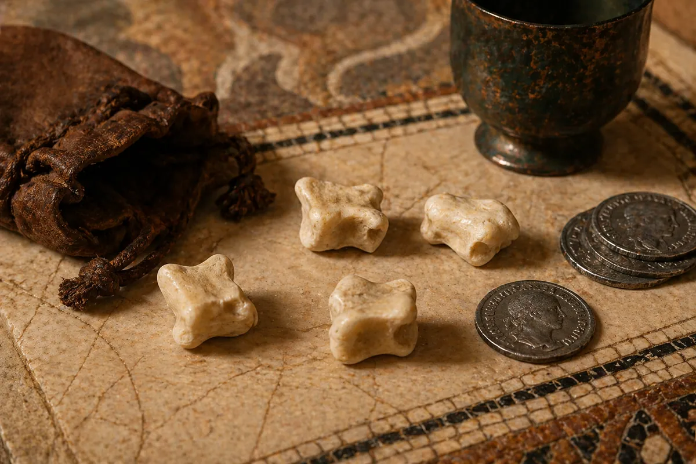
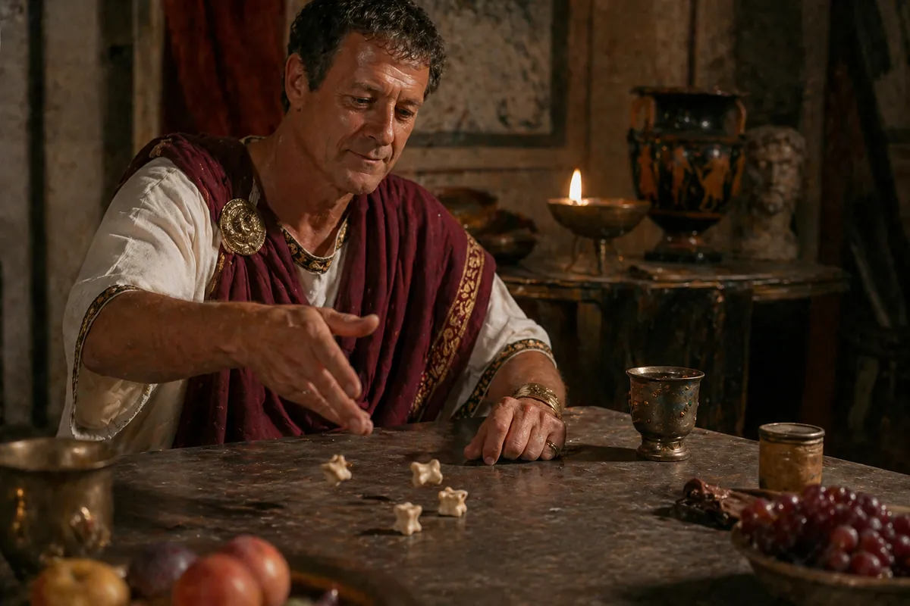
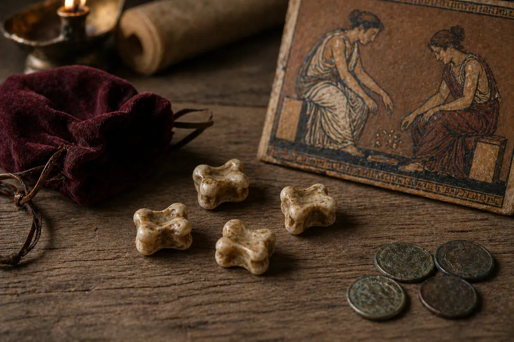

Fets sorprenents que mostren que les tabes no han estat mai només un joc, sinó també una pràctica social, simbòlica i cultural molt antiga.
Posa’t a prova
Veritat o mentida?
Llegeix l’afirmació, decideix si és veritat o mentida i fes clic a la targeta per comprovar-ho.
Històries amb font
Ho diuen els textos antics
01
Quan jugar servia per no morir de gana
Segons Heròdot, els lidis, un poble de l’Àsia Menor, van inventar els jocs durant una gran fam. Per suportar-la, un dia jugaven sense menjar i l’endemà menjaven sense jugar. Ho van fer durant divuit anys.
Font: Heròdot, Històries, I, 94 (s. V aC).
02
Una manera de parlar amb els déus
A Grècia i a Roma, les tabes servien també per endevinar el futur: era l’astragalomància. Alguns astràgals duien gravats noms de déus, i al costat d’altars i santuaris se n’han trobat milers.
Font: troballes arqueològiques en santuaris grecs, com la cova Corícia.
03
La tirada perfecta: el Cop de Venus

Es jugava amb quatre tabes. Treure quatre cares diferents era el Cop de Venus, la millor tirada. Quatre uns eren el Canis (el gos), la pitjor.
Font: Suetoni, Vida d’August, 71, que cita cartes de l’emperador.
04
L’emperador que perdia diners

August jugava a tabes amb els amics, durant els sopars i per les Saturnals, i hi apostava. En una carta explica que va perdre una quantitat important, però que hauria guanyat molt més si no hagués estat generós amb els altres jugadors.
Font: Suetoni, Vida d’August, 71.
05
No sempre es jugava igual

Tant a Grècia com a Roma hi havia dues grans maneres de jugar: el joc d’habilitat amb cinc tabes, que els grecs anomenaven pentalitha, i el joc d’atzar amb quatre. El que canviava eren els noms de les jugades i les combinacions que es valoraven més.
Font: síntesi de les fonts sobre el joc grec i romà (vegeu Fonts).
06
Els avantpassats dels daus
Abans que hi hagués daus cúbics, les tabes ja servien per obtenir resultats a l’atzar. Amb el temps, els adults es van passar als daus, però tots dos objectes van conviure molts segles, com es veu en aquesta vitrina.
Imatge: astràgals, daus i fitxes d’os. Museu Saint-Remi de Reims.
07
Una baralla que va acabar malament
A l’Ilíada, l’ombra de Pàtrocle recorda que, de petit, va matar sense voler un company en una discussió mentre jugaven a tabes. Per això va haver de fugir de casa.
Font: Homer, Ilíada, cant XXIII.
08
Alcibíades no es mou
Quan era un noi, Alcibíades jugava a tabes enmig del carrer. Va arribar un carro i ell no es va apartar: es va estirar a terra davant del cavall perquè el carreter s’hagués d’aturar i no li espatllés la jugada.
Font: Plutarc, Vida d’Alcibíades, 2.
09
Una obra mestra de tabes
L’escultor grec Policlet va fer en bronze dos nens nus jugant a tabes, els Astragalizontes. Plini el Vell explica que era una de les obres més admirades del seu temps. Avui no se’n conserva cap còpia segura.
Font: Plini el Vell, Història natural, XXXIV, 55.
10
Una cova amb milers de tabes
A la cova Corícia, al mont Parnàs (Grècia), els arqueòlegs hi van trobar més de vint mil astràgals. Eren ofrenes a Pan i a les nimfes, i potser es feien servir per consultar el futur.
Font: excavacions de l’Escola Francesa d’Atenes a la cova Corícia.
Les imatges marcades amb «Recreació feta amb IA» són il·lustracions modernes: no reprodueixen cap objecte ni escena real.